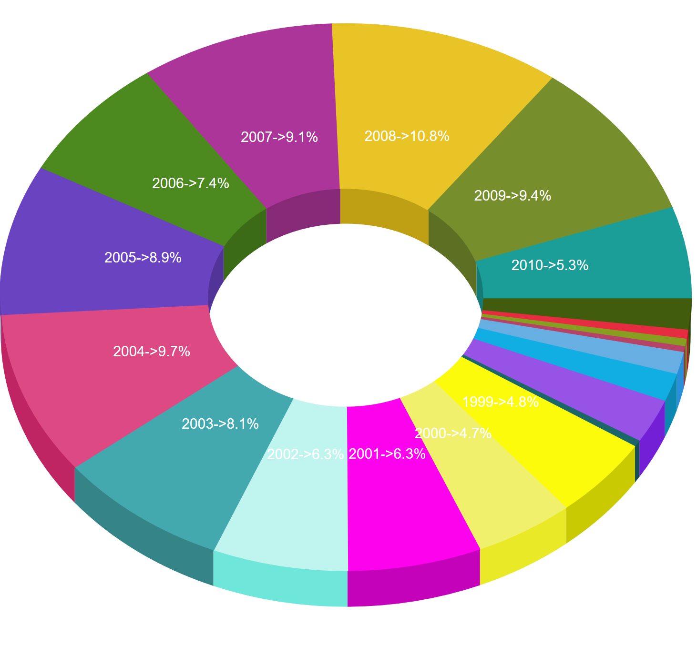
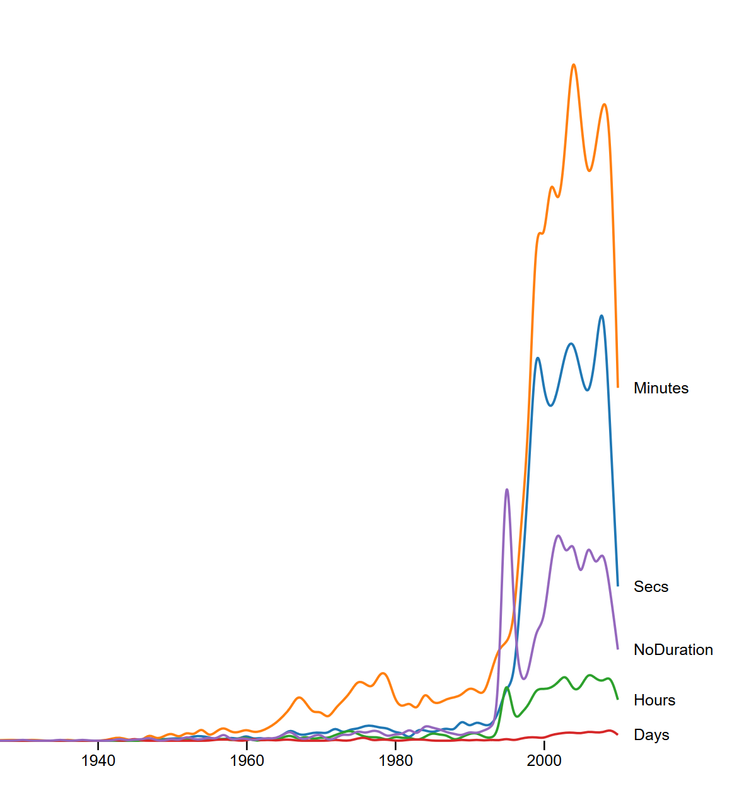
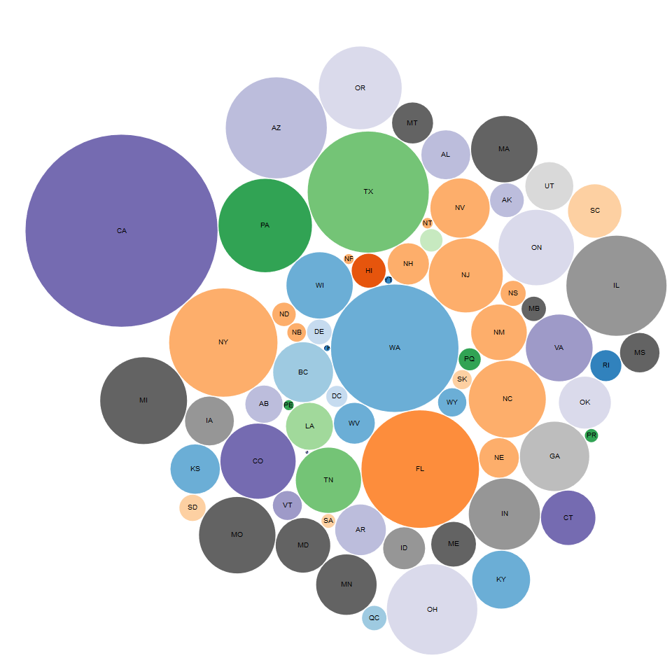
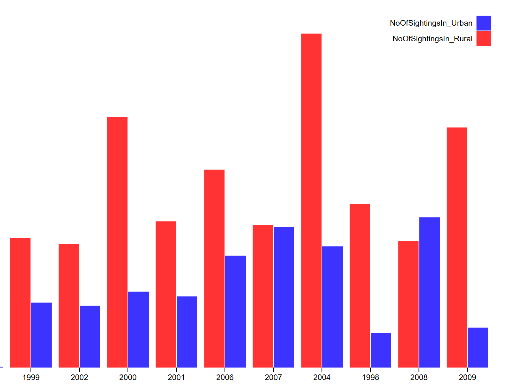
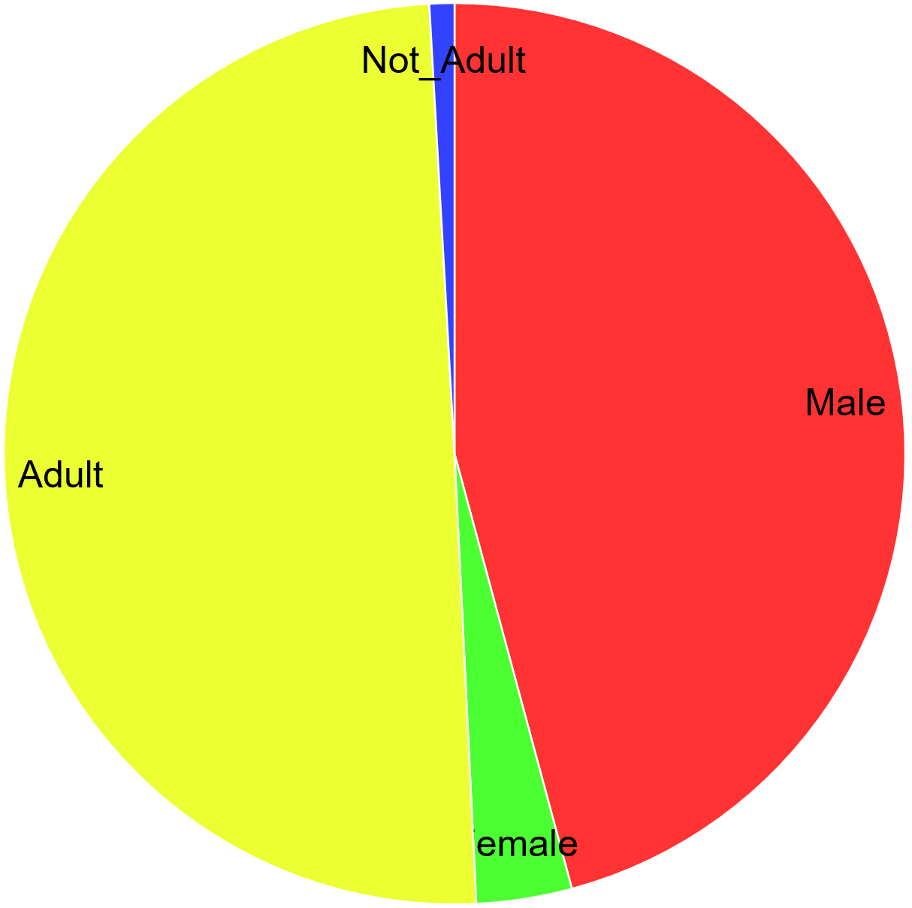
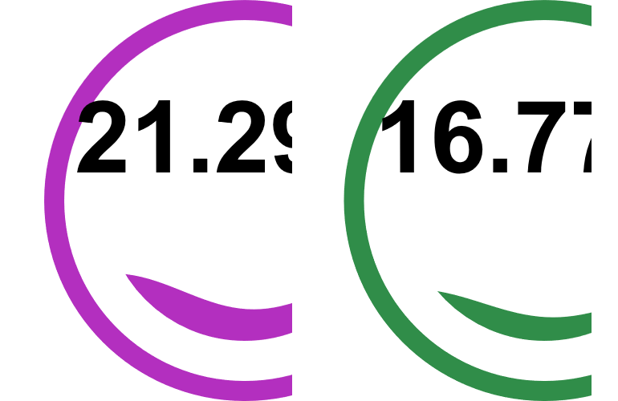
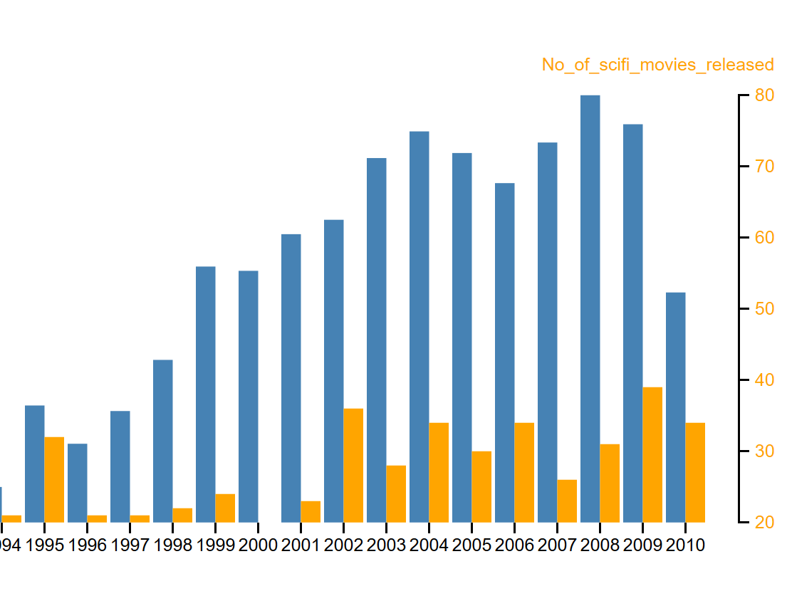
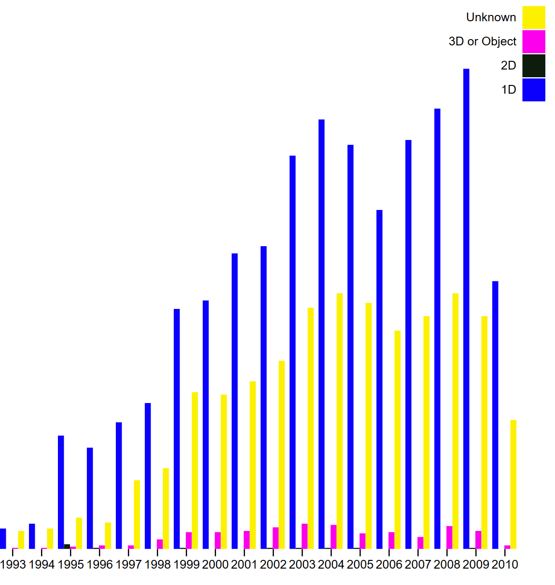
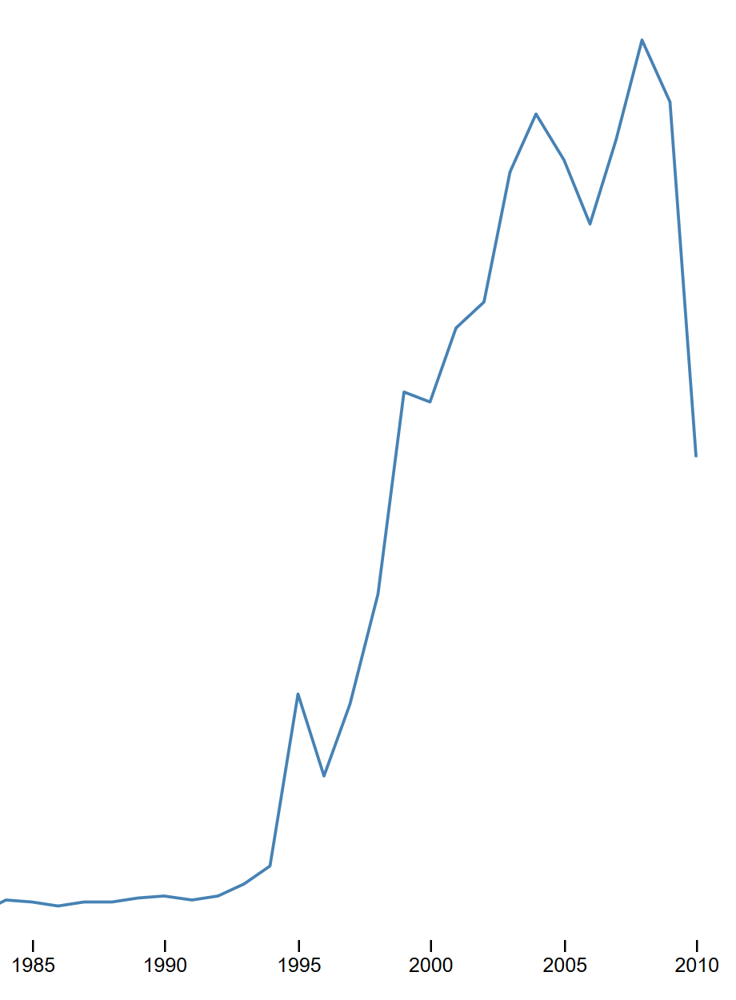
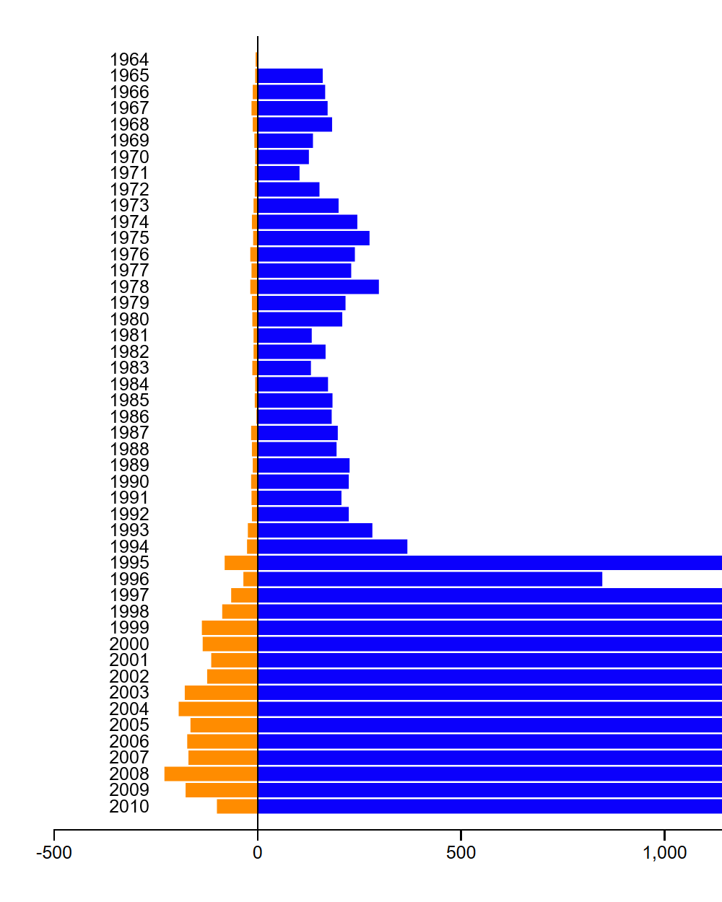

Aashish Sood
SOFTWARE ENGINEER
About Me
Selected Work

Dense Sparse Count

UFO sightings by duration

Bubble Chart: Sightings reported per state

Bar Graph: Meteorite landings in rural and urban areas

Pie Chart: Sightings by gender

UFO Sightings Urban vs Rural

UFO Sightings vs Number of Sci-Fi Movies released

UFO Sightings: Shape Count

UFO Sightings reported Count by year

UFO Sightings: Distance from Airport